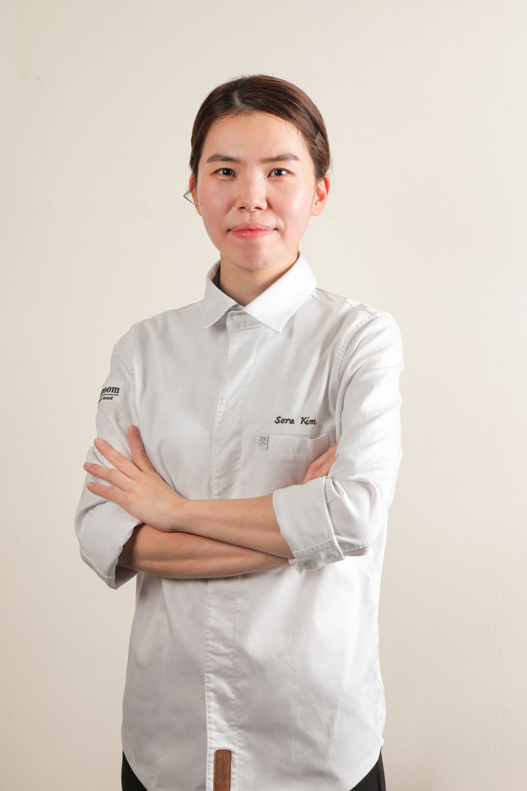

도우룸 셰프들의 이야기

도우룸의 Executive Chef & Owner
Jun Lee
1983년 서울에서 태어난 이준 쉐프는 2008년 경희대 조리과학과를 졸업하고 2010년 The Culinary Institute of America A.O.S 과정을 수료하였다.
캐나다 토론토의 Madelaine’s와 미국 뉴욕의 Per se에서 견습생활을 거친 그는 뉴욕 Lincoln에서 파스타메이커로 일한 뒤 한국으로 돌아와 대한민국 최초의 팝업레스토랑인 Jun the Party 및 Jun the Pasta를 성공적으로 오픈시키고 다수의 팝업 프로젝트를 성공시키켜 결국 2013년 겨울 ‘스토리텔링 파인다이닝’이라는 국내 유일 컨셉의 레스토랑 SOIGNÉ를 오픈한다.
이후 수제 생면 파스타 레스토랑인 ‘도우룸’과 유러피언 다이닝 ‘디어와일드’를 오픈하여 스와니예 레스토랑 그룹을 확장시키고 있다.
도우룸의 Chef de Cuisine
Hyungchul Kim
도우룸의 General Manager
Jungeun Lee
도우룸의 Sous Chef
Sora Kim
